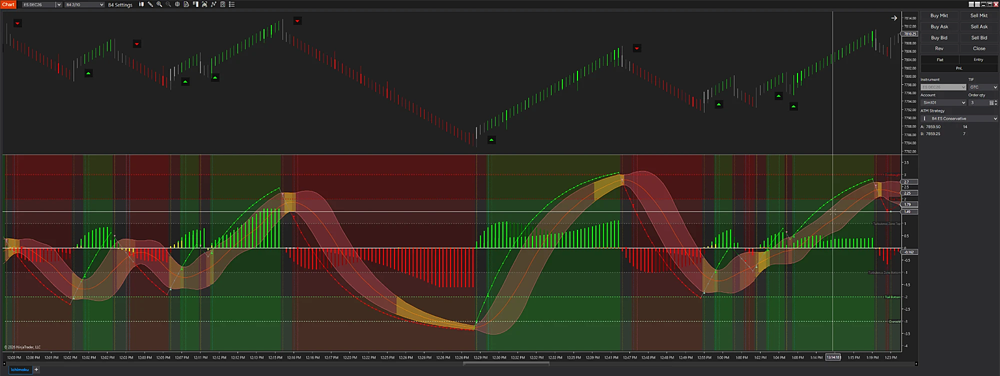

Preview

VISUALIZATION · Enhanced visualization based on a NinjaTrader 8 screen from a simulation account (Sim101). Not a live trading result. Select an image to open it full size.
On TradingView
B4 Indicator Pro runs on NinjaTrader 8. The B4 Indicator, with its trading bands, confluence cloud, squeeze dots and squeeze cloud, is published on TradingView.
Momentum. Trend. Squeeze. One Panel.
B4 Indicator Pro is the B4 momentum and trend panel for NinjaTrader 8. It brings MACD-BB bands, a momentum histogram, RSI with the Inverse Fisher Transform, a Fib SuperTrend, squeeze detection and the Trend Cloud together in one lower chart panel, with zone levels for context.
Each part answers a different question: where momentum is heading, whether volatility is compressed, and whether trend, momentum and the oscillators agree.
Core Capabilities
- MACD-BB Trend Line and Bands: a MACD-based Trend Line inside Bollinger-style top, middle and bottom bands, with a band fill and optional markers where the Trend Line crosses a band.
- Momentum Histogram: the MACD (12, 26, 9) histogram, colored by direction and by whether momentum is building or fading.
- RSI with Inverse Fisher Transform: a smoothed RSI passed through the Inverse Fisher Transform to mark changes in direction.
- Fib SuperTrend: a SuperTrend built on a Fibonacci retracement of the recent range, tracking trend direction.
- Squeezes: detects low-volatility squeezes and shows them as a squeeze cloud between the bands and as squeeze dots.
- Trend Cloud: a full-height green or maroon background on bars where RSI (7), slow Stochastic (14, 3, 3) and the MACD histogram all agree. Nothing is drawn when they disagree.
- Zone Levels: Overbought, Trail Top and Turbulence Zone Top above zero; Turbulence Zone Bottom, Trail Bottom and Oversold below. Built-in values for ES, MES, NQ and MNQ, and you can save your own zone values for each supported futures instrument.
- Vertical Event Lines: vertical lines in the panel when the Fib SuperTrend and the RSI Inverse Fisher Transform turn bullish or bearish together, plus buy and sell markers on the price panel.
- Bar Coloring and Alerts: optional candle coloring from the Trend Cloud confluence, and optional alerts for entries, MACD-BB crosses and squeeze starts.
- B4 Outputs: publishes its signals and its Trend Cloud, zone and squeeze states as read-only outputs that B4 Tape and B4 Scanner read for context.
Built for Context
B4 Indicator Pro shows where momentum, trend and volatility line up and where they do not. Zone levels are context, not trade signals. Use them alongside price action and your own trading plan.
B4 Indicator Pro — Momentum, trend and squeeze context in one panel.
For educational and research purposes only. Not trading advice. Trading involves substantial risk, and indicator signals do not guarantee results.